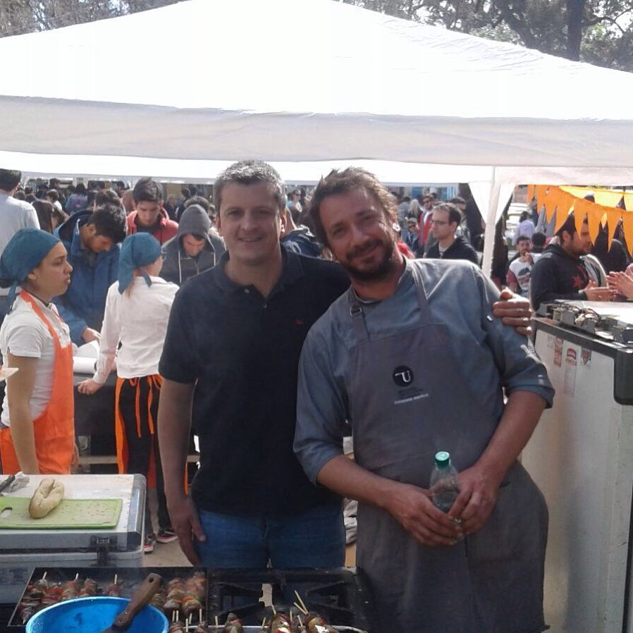

Flavio Pereyra
Arrastrado por una hermana viajó,al terminar el liceo,a Estados Unidos. El país donde descubrió su vocación de cocinero.Luego de varias ideas,venidas y algunos parajes por Europa,se decidicó y estudiócocina básica en la University School New York y, manipulacioón de alimentos en el Health Department of New York. "En el restaurante Jefferson fue donde aprendí más,pasé por todas las estaciones hasta culminar ocmo sub chef de línea en la cocina americana-asiática".En este momento,es el Jefe de Cocina del restaurante Bistró Latino a cargo de Shaw,uno de sus dueños."
